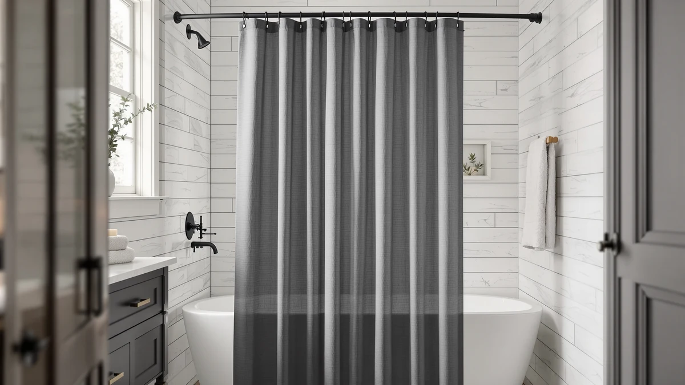

Shower Curtains vs Glass Doors: Which Is Better? (2026)
Prices and picks verified as of September 2026. Independent, reader-supported reviews.


Things to Know Before You Buy
- A shower curtain and liner cost $15 to $40 total, while a glass door installation runs $300 to $1,200 with labor.
- Glass doors take a plumber or glazier several hours to fit; a curtain and rod go up in under 15 minutes with no tools beyond a drill for the rod.
- Curtains are machine-washable and cheap to replace; glass doors need regular squeegeeing and occasional professional resealing.
- Renters can hang a curtain in any bathroom without landlord approval, but a glass door usually requires permanent tile drilling.
- Frameless glass doors are commonly cited by real estate agents as a bathroom feature that appeals to buyers, while curtains carry no resale weight.
Shower curtains vs glass doors is one of the first decisions you make when you plan or update a bathroom, and the right call depends more on your budget and your lease than on taste alone. Both options keep water inside the shower, but they get there in different ways and at sharply different costs.
This guide compares shower curtains and glass doors across price, installation, durability, cleaning, and daily use, then walks through which one fits your bathroom. We also cover practical curtain picks at the end, since most readers land on a curtain once they see the full cost and maintenance picture.
Quick Answer
A shower curtain costs less, goes up in minutes, and lets you change your mind without calling a contractor, so it's the better bet for renters and tight budgets. A glass door earns back more at resale and gives the shower a cleaner sightline, so it suits homeowners upgrading a primary bathroom for the long haul. Most people comparing shower curtains vs glass doors on a practical budget come out ahead with a curtain.
What is Shower Curtains?
A shower curtain is a fabric or plastic panel that hangs from rings on a rod above the tub or stall, closing off the wet area while you shower. Most setups pair a decorative outer curtain with a waterproof liner underneath, though some curtains, like several picks in this guide, are made from PEVA or polyester and skip the separate liner entirely. Rods come in straight, curved, and tension-mounted styles, so a curtain adapts to almost any tub or stall shape without modification to the wall or floor.
The category spans a wide price and style range. A basic polyester curtain costs under $15, while heavier cotton or linen options with a tailored pleat run $40 to $60. Because nothing about a curtain is permanent, you can swap colors and patterns seasonally or when you move, which is the main appeal for renters weighing shower curtains vs glass doors before signing a lease.
What is Glass Doors?
A glass shower door is a fixed or sliding panel, typically tempered safety glass in a framed, semi-frameless, or fully frameless mount, installed directly into the tub deck or stall opening. Framed doors use metal tracks and cost less, and frameless doors use thicker glass and minimal hardware for a cleaner look, but they cost significantly more and require precise measurement for a leak-free seal.
Installation is a job for a licensed contractor or glazier in nearly every case, since the glass must be cut to the exact opening and the hardware anchored into tile or stone. Once installed, a glass door is permanent, and removing or replacing one means drilling out anchors and patching tile. That is why homeowners weigh this decision more carefully than a curtain purchase, and why the shower curtains vs glass doors choice tends to track how long you plan to stay in the home.
Head-to-Head: Build Quality & Durability
Tempered glass is built to last decades with almost no structural wear. Hardware like hinges and rollers on sliding doors can loosen over time and need occasional tightening, but the glass panel itself rarely fails. A curtain has a shorter lifespan by design: liners and lower-cost fabric curtains typically last one to two years before the material thins, discolors, or develops mildew staining that no wash cycle removes. Reviewers of budget PEVA liners consistently note that the material stiffens and yellows faster in high-humidity bathrooms.
That durability gap runs in both directions once you look at damage risk. Glass doors can crack or chip if struck hard enough, and a full pane replacement costs hundreds of dollars. A torn or moldy curtain, by contrast, costs under $20 to replace and takes five minutes to swap. On the shower curtains vs glass doors durability question, glass wins on longevity per unit, but curtains win on cost to maintain that longevity over years of ownership.
Head-to-Head: Price & Value
The price gap between these two options is the biggest factor in most people's decision. A full curtain and liner setup, including rod and rings, typically totals $30 to $60. A glass door installation, according to national remodeling cost data, runs $300 for a basic framed panel up to $1,200 or more for a custom frameless enclosure, and that figure usually excludes tile repair if the old setup needs removal.
Over a five-year span, even replacing a curtain and liner every year lands well under $200 total, a fraction of a single glass door installation. Value tilts toward glass only if you factor in resale appeal, since agents and buyers often treat a frameless door as a bathroom upgrade rather than a maintenance item the way they view a curtain. On raw price alone, shower curtains vs glass doors is not a close contest.
Head-to-Head: Use Experience
Day to day, a glass door offers a more open, airy feel and a clear sightline into the shower, which many owners report makes a small bathroom look larger. It also swings or slides open fully, so getting in and out is unobstructed. A curtain, especially a lightweight one, can cling to your skin or billow inward from water pressure differences, a common complaint in verified owner reviews of budget curtains without a weighted hem.
On the maintenance side, curtains are easier to live with. Most liners and machine-washable curtains go straight into a laundry cycle every few weeks to clear soap scum and mildew. Glass doors need routine squeegeeing after every shower to prevent hard water spots, plus periodic descaling with a vinegar or commercial cleaner, which adds up to more frequent, smaller maintenance tasks than a curtain requires. Anyone comparing shower curtains vs glass doors on day-to-day upkeep should weigh a five-minute weekly squeegee habit against an occasional wash cycle.
When to Choose Shower Curtains
Choose a shower curtain if you rent, plan to move within a few years, or want to update your bathroom's look without hiring a contractor. Curtains also make sense for irregular tub and stall shapes, clawfoot tubs, or extra-wide openings that a standard glass panel cannot cover without custom fabrication. If your budget for the shower enclosure is under $100, a curtain and quality liner is the only realistic option.
Curtains also suit households with kids or anyone concerned about a hard glass surface near a slippery shower floor. A weighted, waterproof curtain paired with a full liner closes most of the price and function gap with a glass door for a fraction of the cost, which is why most shower curtains vs glass doors comparisons for budget-conscious buyers land here.
When to Choose Glass Doors
Choose a glass door if you own your home, plan a longer-term stay, and want the resale bump that a frameless enclosure typically adds to a primary bathroom. Glass doors also make sense in a walk-in shower with a standard rectangular opening, where a custom cut fits cleanly without the irregular-shape problems that push curtain buyers toward fabric instead.
A glass door is also the better fit if you dislike the feel or upkeep of fabric, since there is no liner to replace, no fabric to launder, and no billowing during use. Budget for both the installation cost and ongoing squeegee habit, and the trade-off in the shower curtains vs glass doors decision comes down to whether you value a permanent, low-maintenance-per-use surface over a cheap, flexible one.
Our Top Picks
If you land on a curtain after weighing shower curtains vs glass doors for your bathroom, these three picks cover the budget, value, and style range most readers ask about.

Editor's Pick
Amazon Basics Bathroom Shower Curtain
A dependable, no-frills curtain that covers most standard tubs and stalls for under $10.
$9.98
Check Price on Amazon
Best Value
Barossa Design Shower Curtain Liner
A mildew-resistant PEVA liner that pairs with any decorative curtain for a near-glass-level seal.
$9.99
Check Price on Amazon
Premium Choice
AmazerBath Boho Shower Curtain Modern
A patterned, textured curtain for buyers who want more visual character than a plain glass panel offers.
$19.99
Check Price on AmazonFrequently Asked Questions
Are shower curtains cheaper than glass doors?
Yes, by a wide margin. A shower curtain and liner typically cost $15 to $40 total, while a professionally installed glass shower door runs $300 to $1,200 depending on size and glass type. Curtains also require no installation labor, while glass doors need a contractor for a leak-free fit.
Do glass shower doors leak less than curtains?
A properly sealed glass door contains water better than a curtain, since curtains can billow or cling and let splashes through at the edges. But a curtain with a weighted hem and a full-length liner, like the picks in this guide, seals the tub or stall opening almost as well for a fraction of the price.
Which is easier to clean, a shower curtain or a glass door?
Shower curtains are easier to clean because most liners and machine-washable curtains go straight into the laundry. Glass doors need regular squeegeeing and periodic descaling to prevent hard water spots and soap scum buildup, which takes more routine effort than a wash cycle every few weeks.
Do glass shower doors increase home value more than curtains?
Real estate agents commonly cite frameless glass doors as a bathroom upgrade that appeals to buyers, especially in primary bathrooms. Shower curtains carry no resale weight either way since buyers expect to replace them, so the value gap only matters if you plan to sell within a few years of installing.
Can renters install a glass shower door instead of a curtain?
Rarely without landlord approval, since glass doors require drilling into tile and are not easily removed. A shower curtain and rod need no permanent modification, which is why nearly every rental defaults to a curtain setup and why tenants comparing shower curtains vs glass doors almost always land on the curtain.
Final Verdict
Weighing shower curtains vs glass doors comes down to how long you plan to stay in a home and how much you want to spend upfront. For most budgets, renters, and irregular bathroom layouts, a curtain like the Amazon Basics Bathroom Shower Curtain delivers nearly all the function at a small fraction of the cost. Homeowners planning a long-term stay and a resale-focused upgrade are the ones who come out ahead with a glass door instead.